第1章では、「集団性（豊かさ）」と「個人性（正しさ）」の相反という形式化を提示し、個人の主観に反して、「相対的な競争」はむしろ「絶対的な生産」に「ブレーキ」をかけるものであることを説明した。
そして、相反する「豊かさ」と「正しさ」を素朴に同一視してしまう「倒錯」が起こっているゆえに、相反関係が認識されにくいとした。
この第2章では、まず、人の「本能」と「社会制度」とが乖離し始めた時点にまで遡って、「豊かさ」と「正しさ」が相反する理由と、「倒錯」が起こる理由を述べる。次に、それを踏まえた上で、現代の「学歴社会」や「資本主義」がどのように機能しているのかを説明する。
目次
- 2.1 なぜサピエンスは「最強の種」になったのか？
- 2.2 遺伝子の「外部」が高速の「トライアル＆エラー」をもたらした
- 2.3 サピエンスは「合理的だから」ではなく「バカだから」強かった
- 2.4 「社会制度（集団性）」と「本能的幸福（個人性）」
- 2.5 「結婚」という不自然な制度が重視されてきた理由
- 2.6 「理性」が「本能」を再発見する
- 2.7 なぜ我々は自己否定しがちな存在なのか？
- 2.8 競争は「人工的に自然を再現しようとする試み」である
- 2.9 競争は「可視化している」に過ぎない
- 2.10 学歴社会は「差別的」だからこそ「豊かさ」を生む
- 2.11 格差が生まれるからこそ「資本主義」が「アクセル」になる
- 2.12 資本主義、共産主義、開発独裁体制
- 第2章のまとめ
2.1 なぜサピエンスは「最強の種」になったのか？
本章では、「豊かさと正しさが相反する理由」を、人間の「本能」と「社会制度」とが乖離していることに見出す。
このトピックについては、ユヴァル・ノア・ハラリによる『サピエンス全史』という書籍の記述を援用したい。原著刊行が2011年の『サピエンス全 史』は、多国語に翻訳されていて、自然環境の破壊（サステナビリティの問題）や工業的な畜産業の倫理的問題など、近年の世界的課題の潮流に一定の影響を与 えている書籍と言えるだろう。
『サピエンス全史』には、我々ホモ・サピエンスがいかに加害的な種であったかを指摘する記述が多く見られる。『人類全史』ではなく『サピエンス全 史』というタイトルである理由として、我々サピエンスが自分たちの近縁である他の人類種との共存を選ばず、「人類」の中で唯一サピエンスだけが生き残った ことが意識されている。
『サピエンス全史』では、まず、「なぜサピエンスという種はこれほどまでに強かったのか？」という問いが投げかけられる。
サピエンスは、今や世界中に繁殖し、この地球を支配しているようにすら見える。しかしサピエンスも、その来歴を辿れば、ヒト科ヒト属から派生した、 他の自然生物と同じような「種」の一員に過ぎない。ではなぜサピエンスは、他の種よりも飛び抜けて強い「最強の種」になることができたのか？
結論を先に言うと、サピエンスの強さは、その「本能（遺伝形質）」ではなく、本能の外部にある「社会制度」に拠る。
サピエンス以外の人類種が軒並み絶滅したのに対して、サピエンスだけが生き残った。あるいは、サピエンスが自分たち以外の人類種を根絶やしにした。つまり、サピエンス以外の人類種は、サピエンスとの生存競争に破れたことになる。ただ、絶滅してしまった他の人類種たちは、その「遺伝形質」が劣っていたわけではない。むしろ、肉体の頑強さや脳の大きさのような単純なスペックでは、サピエンスを上回る種もいたという。にもかかわらず、生存競争ではサピエンスの圧勝だったのだ。
『サピエンス全史』において、著者のハラリは、一般的にサピエンスの特徴とされやすい「大きな脳、道具の使用、優れた学習能力」といった要素は、サ ピエンスの強さの要因ではないとしている。なぜなら、ハラリが言うに、過去のサピエンスは、今の我々とほとんど変わらない遺伝的なスペックを持っていなが らも、長らく「サバンナの負け組」を続けていたからだ。
例えば、サピエンスの石器の初期の使い方は、他の強力な捕食者たちが残していった死骸の骨を割って、その骨髄を啜ることだった。基本的にサピエンス は、自分より強い生物からは隠れて、こそこそと暮らしていた。「脳が大きくて学習能力があること」や「手先が器用で道具を使えること」は、他の捕食者たち が持つ「強靭な肉体」や「鋭い爪や牙」のような武器と比較して、決して強力なものではなかった。
サピエンスは、遺伝形質としては今の我々とほぼ変わらないスペックを有していた時期でさえ、長い時間を「負け組」として暮らし続け、そして、ある小さな変異によって唐突に「最強の種」へと変貌した。ハラリはそのきっかけを「認知革命」と呼んでいる。
ハラリによると、今からおよそ7万年ほど前に、サピエンスの脳に「認知革命」という変化が起こり、それによってサピエンスは「嘘（フィクション）」を信じられるようになった。
特にパッとしない種だったサピエンスが、「認知革命（嘘を信じられるようになる）」という小さな変化によって、瞬く間に「世界の支配者」まで上り詰めたというのが、『サピエンス全史』が提示するストーリーだ。
以下に本文を引用する。
サピエンスは十五万年前にはすでに東アフリカで暮らしていたものの、地球上のそれ以外の場所に侵出して他の人類種を絶滅に 追い込み始めたのは、七万年ほど前になってからのことだった。それまでの八万年間、太古のサピエンスは外見が私たちにそっくりで、脳も同じぐらい大きかっ たとはいえ、他の人類種に対して、これといった強みを持たず、とくに精巧な道具も作らず、格別な偉業は何一つ達成しなかった。
（『サピエンス全史』第2章「虚構が協力を可能にした」より引用）
ハラリが言うには、「認知革命」が起こるより前の長い期間、サピエンスは、今の我々とほとんど似たような身体や脳の特徴を持ちながらも、特別な強みがなく、数多くいる自然生物の中の目立たない一種にすぎなかった。
だが、「嘘を信じられるようになる」という、形質としてはささやかな変化がサピエンスの脳に起こる。（哺乳類の誕生がおよそ2億3000年前、霊長 類の誕生が約6500万年前、ヒト属の誕生が約250万年前、サピエンスの誕生が約20万年前であり、我々の形質がそれくらいのスパンで形作られてきたこ とを考えるなら、7万年前のことでも「ささやかな変化」になる。）
そして、その「認知革命」を機にサピエンスは、他の自然生物や近縁の人類種たちをごく短期間のうちに絶滅に追いやってしまうほどの、「最強の種」へと変貌した。
2.2 遺伝子の「外部」が高速の「トライアル＆エラー」をもたらした
なぜ「認知革命（嘘を信じられるようになった）」という変化がサピエンスを強くしたのかというと、それが、短期間のうちに膨大な「トライアル＆エラー」を回すことを可能にしたからだ。（ここからは、『サピエンス全史』の記述とはやや説明の仕方が異なるかもしれないが、本論なりに内容を噛み砕いて説明する。）
「嘘を信じられるようになった」は、別の言い方をすれば「騙されやすくなった」でもあり、「遺伝子の外部」にあるものの影響を受けて行動が変化しやすくなったということだ。
宗教、文化、思想、慣習、法律、科学技術、社会制度など、現在も我々サピエンスを大きく規定しているシステムは、我々の「遺伝子（内部）」ではな く、その「外部」にあるものだ。サピエンスは、「騙されやすくなった」という変化によって、自身の「外部」にあるものの影響を受けやすくなった。
サピエンスの種としての強さの理由は、遺伝子という「内部」ではなく、思想や社会制度などの「遺伝子の外部」の影響を受けて行動パターンを大きく変化させることにあり、逆に言えば、サピエンス以外の生物の場合、それは起こりにくい。
サピエンス以外の生物は、遺伝子によって行動パターンが変化する。遺伝子を介した変化は、基本的には、特定の形質が何世代もの個体を経て少しずつ形になる、ゆっくりとした変化だ。
一方で、「何を信じるか？」は、ごく短期的に変化しうるし、その変化は同一の個体の内でも行われる。
遺伝子の「外部」によって行動パターンを変化させるサピエンスは、他の生物と比べて、変化のスピードが圧倒的に早いのだ。
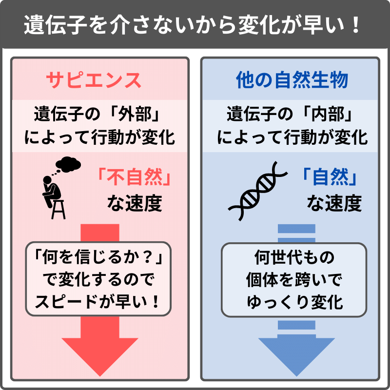
サピエンスと他の種とを比較して、遺伝子を介さない変化が可能なサピエンスは、「トライアル＆エラー」を繰り返す速度が、他の自然生物と隔絶している。
速度が早いことは、当然ながら数が多いことをも意味する。自然生物と比べて、サピエンスは膨大な試行錯誤を繰り返すことが可能であり、それゆえに「種」として圧倒的に強かったのだ。
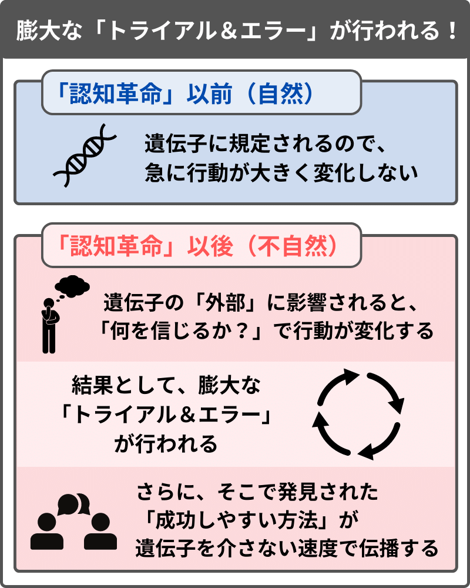
生態系は、基本的には、均衡しながら緩やかに変化していく。例えば、「自然」な環境において、特定の種が「大勝ち」することは稀だ。ある種が、何ら かの偶然で一時的に数を増やしたとしても、それによって餌が減り、餌の取り合いが過酷になるので、次は飢える個体が多くなる。その餌となる種は、一時は天 敵の多さに苦しむが、それを耐えれば天敵の数は減っているので、今度は自分たちが増えるチャンスがやってくる。このような形で均衡しながら、それぞれの状 況に適応し合い、特定の状況における有利な形質が子孫に引き継がれ、長い時間をかけて少しずつ生態系が変化していく。
一方でサピエンスは、そのような生態系の「自然」な均衡からは外れた存在であり、遺伝子を介さない「不自然」な速度で変化する。サピエンスが特定の種に対する攻略パターンを見つけた場合、遺伝子による遅い変化しかできない自然生物は、対応する間もなく狩りつくされてしまうことが多かった。
現在も、サピエンスの輸送手段などによって、遠く離れた場所から持ってこられた「外来種」が、自然な生態系の均衡を破壊するように繁殖することがある。ただ、かつてはサピエンス自体が、多くの自然生物にとって、別の時空からやってきた「外来種」のようなものだった。
そして、サピエンスと自然生物との関係は、サピエンスとサピエンス以外の人類種においても当てはまる。個体のレベルでは、他の人類種も、「学習能力」や「手先の器用さ」を特徴とし、サピエンスよりも体格が大きかった種や、脳が大きかった種もいた。しかし、サピエンスが「遺伝子」を介さずに変化できたのに対して、他の人類種はそうではなかったので、「不自然」な速度で変化するサピエンスの驚異に対応することができなかった。
2.3 サピエンスは「合理的だから」ではなく「バカだから」強かった
サピエンスは、「個」として強かったのではなく、「種」として強かった。
個体レベルでは、嘘（理屈に合わないもの）を信じてしまうことは、むしろその個体を不利にしやすい。
「嘘を信じやすい（騙されやすい）」という特徴は、現代における知性の基準からは低く評価されやすいものだが、そのような、ある種の欠陥ゆえに、サピエンスは「種」として大躍進を遂げた。
逆に言うと、「嘘に騙されず、合理的な判断ができる」という現代の基準で評価されやすい頭の良さは、サピエンスとの生存競争に破れた他の人類種の特徴に近い。「騙されない」人類は、「個」としては強くても、「種」として長期的に争った場合、サピエンスには手も足も出なかった。
個体同士や、数回程度の争いにおいては、「嘘を信じられるから強い」わけではない。むしろ、理屈に合わないことを信じるのだから、失敗する場合のほ うが多いだろう。しかし、嘘に騙されて行動を変化させてしまうからこそ、膨大な量の試行錯誤が生まれる。試行回数が増えるほど、どこかで「大成功」を引き 当てることも多くなる。
そしてサピエンスの場合、有利な行動パターンが偶然に発見されれば、それが遺伝子を介さない「不自然」な速度で伝播していく。そのため、長期的には、攻略法が行き渡ったサピエンスの圧勝になる。
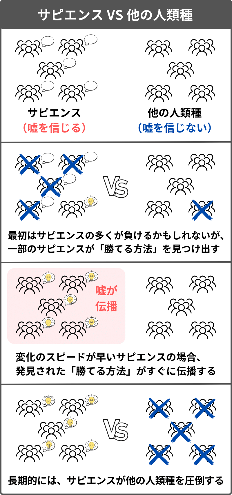
サピエンスは、嘘を信じてしまうような「バカだった」から、それによって膨大な「トライアル＆エラー」が生まれ、種としては大成功した。
この話は、成功法則としても示唆的なものがあるかもしれない。現代でも、考える人間より、考えずに行動する人間のほうが、バカだからこそ試行回数を 重ねて、結果的に成功を掴むことは珍しくない。個人の成功法則レベルでも試行回数が重要なのだから、種としてそれを行ったサピエンスが圧倒的に強かったの は無理もない。
ネアンデルタール人は、サピエンスと脳の容量が変わらず、高度な石器を使用し、埋葬の風習すらも有していた。しかし彼らは、サピエンスのように「嘘 を信じられる」わけではなかったとハラリは述べている。そして、遺伝子を介さない「不自然」な速度で試行錯誤を繰り返すサピエンスにとっては、ネアンデル タール人のような「学習能力」や「道具の使用」を武器とする同じ人類であっても、他の「自然」な生物とたいして変わりはなかった。
一対一で喧嘩をしたら、ネアンデルタール人はおそらくサピエンスを打ち負かしただろう。だが、何百人という規模の争いに なったら、ネアンデルタール人にはまったく勝ち目がなかったはずだ。彼らはライオンの居場所についての情報は共有できたが、部族の精霊についての物語を 語ったり、改訂したりすることは、おそらくできなかった。
二つの人類種の間で暴力的な衝突が勃発したときには、ネアンデルタール人は野生の馬とたいして変わらず、勝ち目がなかった。従来の静的なパターンで 協力する50人のネアンデルタール人は、融通が利く革新的な500人のサピエンスには、まったく歯が立たなかった。そして、サピエンスはたとえ初戦を落と しても、たちまち新しい戦略を編み出し、次の戦いに勝利を収めることができた。
（『サピエンス全史』第2章「虚構が協力を可能にした」より引用）
ここまで紹介してきた『サピエンス全史』の内容が、十分に実証的なものかどうか、あるいはハラリによる「認知革命」という説明の仕方が妥当なものか どうかについては、議論の余地があるだろう。ただ本論では、少なくとも、サピエンスが種として成功した要因が「遺伝子の外部」にあるとは言えると見なし て、以降の話を進めていく。
2.4 「社会制度（集団性）」と「本能的幸福（個人性）」
「生存に有利な形質（遺伝子）が残る」というダーウィンの「自然選択」は、今や広く知れ渡っている説だが、これに関して、「サピエンスだけは事情が異なる」と、ここでは考える。
自然な生物の場合は、有利な「遺伝子」が生き残ってきたのだが、サピエンスの場合は、有利な「社会制度（遺伝子の外部）」が生き残ってきた。
サピエンスとそれ以外の種の争いは、「遺伝子」を介さない変化が可能なサピエンスの圧勝だった。そして、その後に起こったのは、サピエンスとサピエンスの争いだ。
サピエンス同士の争いにおいては、より有利な「社会制度」を備えた集団が生き残りやすかった。（以降では省略のために、宗教、文化、思想、慣習、法律、科学技術など遺伝子の「外部」にあるものを、まとめて「社会制度」と呼ぶことにする。）
第1章（1.6）で述べてきたように、現在の我々が「伝統的な価値観（保守）」と認識しているものは、これまでの歴史において、集団の存続に有利だったからこそ尊重されてきたものであることが多い。
一方で、「近代的な価値観（リベラル）」が浸透した現代において、集団を生き残らせるために機能していた「伝統的な価値観」は、個人の権利、自由、幸福を否定する「正しくないもの」と見なされがちだ。
なぜこのようなことが起こるのかというと、「遺伝子の外部（社会制度）」が、サピエンス自身の「内部（本能的幸福）」を置き去りにして、サピエンスをごく短期間のうちに飛躍的に成功させたからだ。
先に述べたが、サピエンスの成功の要因である「認知革命（嘘を信じられるようになること）」は、遺伝的にはわずかな変化であり、サピエンスに内在する遺伝的な特徴自体は、他の自然生物とそれほど大きく変わらない。
つまり、サピエンスは、遺伝子の「外部」によって「不自然」な速度で発展したゆえに、自らの内部はまだほとんど「自然」なままなのだ。
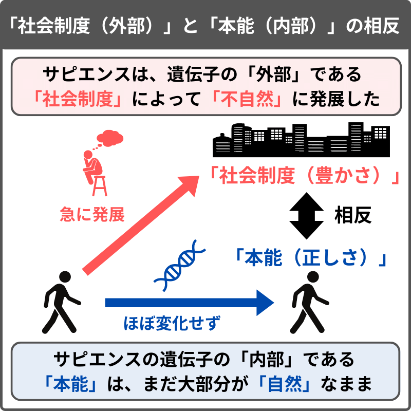
自身を強くした「社会制度」と、自身の「本能」とが乖離してしまっていることが、自らの遺伝子を置き去りにする速度で急に発展した、我々サピエンスの抱える事情なのである。
第1章で、「集団性（豊かさ）」と「個人性（正しさ）」の相反を説明したが、それをここまでの内容と接続すると、サピエンスの「外部」にある「社会制度」が「集団性」であり、サピエンスの「内部」にある「本能」が「個人性」になる。
- 集団性（豊かさ）：不自然：サピエンスの「外部」にある「社会制度」
- 個人性（正しさ）：自然 ：サピエンスの「内部」にある「本能」
サピエンスに内在する「本能的幸福（個人性）」を重視することは、個人の主観としては「正しい」ものに映る。一方で、今に至るまでサピエンスが築き上げてきた「豊かさ」は、「社会制度（集団性）」に拠るものだ。
そのため、「豊かさ」を重視すると個人の幸福の否定になりやすく、「正しさ」を重視すると社会が衰退しやすいという、相反関係が生じる。
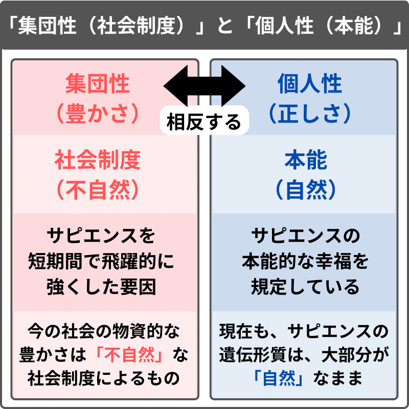
「社会制度（集団性）」は、サピエンス個人の「本能的幸福（個人性）」と相反するが、それが集団を生き残りやすくさせるものであるからこそ、継続し てきたし、尊重されてきた。ただ、そのような「社会制度」は、近代に入り、我々が「個人」として合理的に思考するようになると、間違ったものと見なされる ようになる。
このような、「伝統的な価値観（保守）」が「近代的な価値観（リベラル）」に否定されるという現象について、以降で説明をしていく。
- サピエンスは、「認知革命（嘘を信じられるようになった）」という遺伝的にはわずかな変化をきっかけに、多くの自然生物や近縁の人類種を短期間のうちに絶滅させてしまうほどの「最強の種」になった。
- 自然生物が「遺伝子」によって行動パターンを変化させるのに対して、サピエンスは「遺伝子の外部」によって行動パターンを変化させる。
- 「遺伝子の外部（社会制度）」は、遺伝子と比較してごく短期間で変化しうるので、サピエンスは、「自然」な生物と隔絶した「不自然」な速度で「トライアル＆エラー」を繰り返すことが可能であり、それがサピエンスの強さの理由だった。
- 「嘘を信じられる（理屈に合わないことを信じてしまう）」ことは、「個」のレベルでは欠陥でも、「種」のレベルでは膨大な試行錯誤を生む要因であり、サピエンスは「合理的だから」ではなく「バカだから」種としては強かった。
- 「認知革命」は、遺伝的にはわずかな変化であり、サピエンスに内在する「本能」の大部分は自然生物と変わらない。つまり、「遺伝子の外部（社会制度）」による種の発展の速度は、個々のサピエンス自身の「遺伝子の内部（本能）」を置き去りにした。
- サピエンスを種として強くした「社会制度（集団性）」と、サピエンス自身に内在する「本能的幸福（個人性）」とが乖離しているゆえに、「集団性（豊かさ）」と「個人性（正しさ）」が相反する。
2.5 「結婚」という不自然な制度が重視されてきた理由
我々サピエンスは、子孫を残そうとする本能や、他者と協力しようとする本能を持っている。しかし、本能が「自然」にそう感じるレベルを超えて、繁殖や協力を「不自然」に強制するのが「社会制度（集団性）」なのだ。
ここでは、「集団性（豊かさ）」として機能する「社会制度」の具体的な例として、「結婚（婚姻）」を挙げたい。
人は、本能として、誰かに恋愛感情を抱くことがある。しかし「結婚」のような「社会制度」は、そういった「自然」な本能を超えて、「不自然」に集団を繁殖させるシステムとして機能してきた。
原理的に考えれば、結婚しなければ子供を産み育てることができないのかと言えば、決してそんなことはない。それでも、一定の規模に達した社会におい て、ほとんど必ずと言っていいほど「結婚」の制度があり、そしてそれは、文化によって多少の形態の違いはあれど、基本的には、現代の価値観からは男尊女卑 と見なされるようなものになる。
今でも、リベラル志向の強い人でさえ、「結婚という制度そのものの否定」ではなく「どんな人同士の結婚でも認められる社会」を主張しやすい。それほどまでに疑うのが難しいほど、結婚は社会の根底に根付いた制度と言える。
どの文化圏においても結婚が重視されてきた理由として、それが、社会の存続や集団の強化にとって最も重要な「出生」を行われやすくするための「アクセル（集団性）」として機能するものだったからと、本論では考える。結婚という社会制度を持たない集団も過去には存在したが、おそらくそのような集団は、サピエンス同士の生存競争に勝つことができなかったのだろう。
伝統的な社会においては、「結婚するかどうかは個人の自由」ではなく、「結婚して子供を作ることは義務」だった。当時の人たちは、「自然な恋愛感情 （遺伝子の内部）」の結果として結婚しようと考えたのではなく、「社会の圧力（遺伝子の外部）」によって否応なく結婚することを迫られた。
現代の、自由恋愛が前提の社会で育ってきた者は、かつて日本の生涯未婚率が5%を切っていた時代があったことを信じがたく思うかもしれない。もちろ んそのような時代は、「個人の欲望」が軽視され、「集団の欲望」が重視されていて、多くの人が嫌々ながら結婚し、我慢して結婚生活を続けていた。
結婚という社会制度は、「それをした人が幸せになるから」ではなく、「その制度を維持した集団が生き残りやすかったから」という理由で重視されてきたものだ。このような「集団の欲望（豊かさ）」のための制度は、「個人の欲望（正しさ）」が尊重されるようになるほど否定される。実際、今の日本に見られるように、個人が自由になるほど、未婚率や離婚率が上昇し出生率が低下する。
一方で、第1章（1.5）で述べたように、個人の意思で結婚しないことを自由に選べる「正しい」社会は、過去に我慢して結婚してきた人たちが生み出した「豊かさ」の余剰を消費することで成り立っている。
このようにして、「豊かさ（集団の存続に必要なこと）」と「正しさ（個人にとっての幸福）」が相反する。
第1章（1.3）では、「集団性（豊かさ）」と「個人性（正しさ）」の対比として「戦争」と「スポーツ」を例に出したが、同じように、「結婚」と「自由恋愛」を対比的に分類できるかもしれない。
- 集団性（豊かさ）：戦争、結婚
- 個人性（正しさ）：スポーツ、自由恋愛
「性は人間にとって重要なことなのだからもっとオープンにすべきだ」というような意見が言われることもあるが、性を抑圧したほうが出生が促進されやすいというのが、歴史的な経験則ではある。現在も、自由な性愛を禁止する文化が残っている共同体ほど出生率が高い。
また、いわゆる「男らしさ、女らしさ」といったような差別的な規範も、集団の存続を有利にするからこそ、これまで尊重されてきたものだ。
「男らしさ、女らしさ」のイメージに対して、実際の「本能」としては、例えば、男性はもっと無責任で、女性はもっと奔放かもしれない。しかし、「本 能」に反する規範や文化を強く機能させてきた共同体のほうが生き残りやすかったゆえに、それらは今でもまだ強い影響力を持ち続けている。
ここまで、「本能」と「社会制度」が相反することを述べてきたが、ここから、「理性」と「社会制度」が相反することを指摘したい。
近代に入り、個人が「理性」を働かせて合理的に思考するほど、集団を強くするがゆえに尊重されてきた「社会制度」の嘘や矛盾に気づく。そのとき、 我々サピエンスの「理性」は、自身の外部にある「社会制度」よりも、内部にある「本能」のほうを肯定していることになる。この作用について、以降で論じて いく。
2.6 「理性」が「本能」を再発見する
一般的に、人間は長らく集団の一部として暮らしてきたが、近代になってから人が「個人」であることが発見された、と考えられることが多い。しかし、 サピエンスが「遺伝子の外部」の影響を受けやすくなること（認知革命）をきっかけに急に躍進した、というここまでの話を踏まえるならば、近代に行われたのはむしろ「個人の再発見」になる。
「認知革命」以後のサピエンス同士の争いにおいて、「集団性（豊かさ）」を強く機能させない集団は生き残るのが難しく、それゆえに「個人の欲望（本能的幸福）」が軽視され、「集団の欲望（社会制度）」が重視される歴史が続いた。
サピエンスは、本能的に「集団」だったわけではなく、「本能」を否定する「社会制度」を強く機能させた集団でなければ生き残ってこれなかったのだ。そのため、少なくとも「社会制度」に強制されてきたよりは、サピエンスの「本能」はずっと「個人」的だ。
そして、近代社会において、合理的・内省的に思考することで特定の「社会制度（規範・文化）」を相対化したサピエンスは、自身に内在する「本能」のほうに「正しさ」を感じやすくなる。
つまり、近代的個人として思考するようになると、「自身が所属する社会制度（集団の欲望）」と「自身に内在する本能（個人の欲望）」とで、後者を重視しやすくなり、それは、一度は否定された自身の「本能」に再び立ち戻るという意味で、「個人の再発見」と言える。
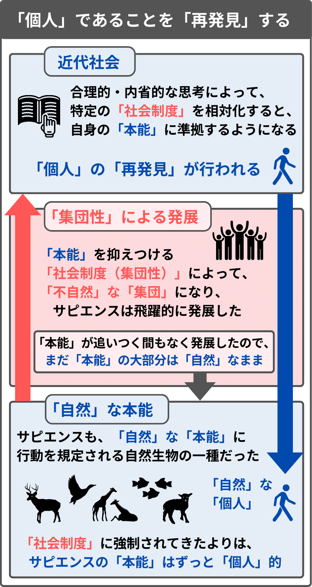
人は、合理的・内省的に思考するほど、社会集団において嘘（フィクション）が機能していることに気づき、自分が「集団」の一部ではなく「個人」であ ると考えるようになりやすい。このように、「伝統的な価値観」が「近代的な価値観」によって疑われるということが、近代以降は顕著に起こるようになって いった。
一般的なイメージとして、「理性」と「本能」が対立すると思われることが多い。しかし、「本能」が「社会制度」に否定されてきた上で、その「社会制度」を「理性」が否定するなら、「本能」と「理性」は、どちらも「社会制度」と対立する。
本論の枠組みにおいて説明するなら、「社会制度」が「集団性（豊かさ）」の側であり、それと相反する「本能」と「理性」は、どちらも「個人性（正しさ）」の側になる。
つまり、近代的個人として「理性」的に思考し、特定の「社会制度（集団性）」を疑うと、自身の「本能」を再評価するようになるのだ。
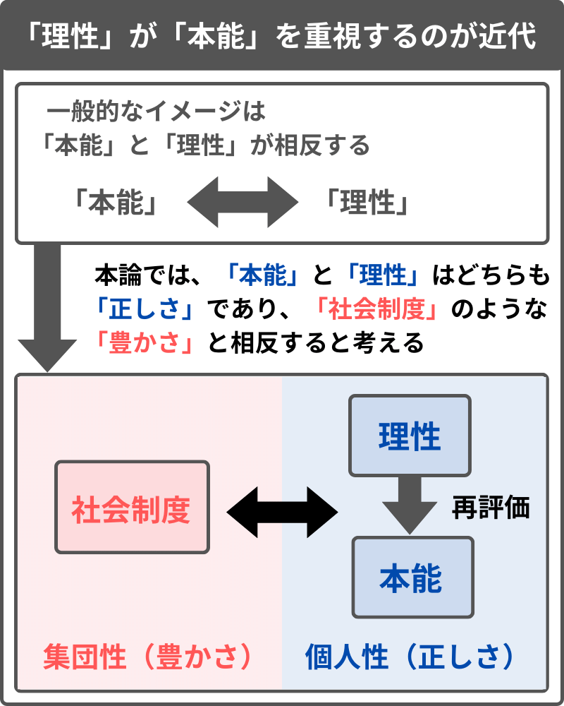
例えば、「近代的な価値観（リベラル）」を重視する側の人たちがよく使う言葉として、「多様性」が挙げられる。
実際のところ、「伝統的な価値観」が押し付けようとする「男らしさ、女らしさ」のような「画一性」と比べれば、個人の遺伝形質（本能）は「多様性」を持っている。
基本的に、「集団性（豊かさ）」は「画一性」を押し付けようとする。何らかのわかりやすいものが重視されたほうが集団としてまとまりやすいからだ。一方で、集団のために強制されてきた「画一性」よりは、個人の「本能」には「多様性」がある。
ゆえに、「理性」によって「本能」が再評価されるようになると、集団のために提示されてきた「画一性」が否定され、「多様性」がキーワードとして掲げられるようになる。（この、「個人性（正しさ）」が「多様性」を重視する作用については、第3章でより詳しく説明する。）
- 集団性（豊かさ）：伝統的な価値観：画一性：「本能」を否定する「社会制度」
- 個人性（正しさ）：近代的な価値観：多様性：「本能」と、それを再評価する「理性」
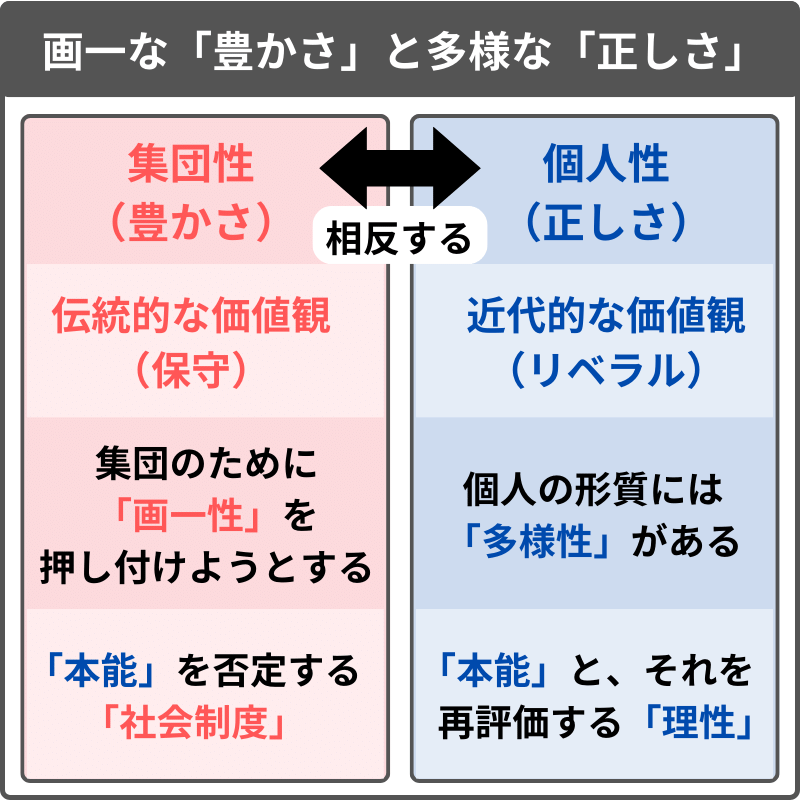
このように、「伝統的な価値観（保守）」が個人に対して「画一性」を押し付けてきたのに対して、「近代的な価値観（リベラル）」は、個人の「多様性」を尊重しようとする。
「多様性」が掲げられる現代社会では、「あなたらしく生きよう」「すべての人が自分らしく生きられる社会を」というようなメッセージが発せられがち だが、これは、伝統的な社会が強制してきた「画一性」に対して、それよりは「多様性」のある個人の「本能」を重視しようとするものになる。そして、本論で はこれを、「理性が本能を再評価している」と考える。
2.7 なぜ我々は自己否定しがちな存在なのか？
集団のための「画一性」よりも、個人の本能に根ざす「多様性」が尊重される社会は、個人の主観としては「正しい」と思いやすいものだ。一方で、第1 章（1.5）で述べたように、今の我々の社会は、個人を否定してきた「集団性（豊かさ）」の余剰によって成り立っている。それゆえに「豊かさ」と「正し さ」は相反し、そしてこの問題は、我々という存在のあり方にまで及ぶ。
今の我々の形質には「多様性」があるが、そのような遺伝的多様性は、「多様性（個人の本能的幸福）」を否定してきた過去に拠っている。つまり、現在の「多様性」は、「多様性」を否定してきた過去によって成り立っている。逆に言えば、もし、過去の人間たちが「多様性（正しさ）」を尊重してきたならば、今の我々のような個体は、この世界に存在していなかった。
先に述べたように、「結婚」という社会制度は、それによって個人が幸福になるからではなく、集団を強くするからこそ尊重されてきたものだ。このよう な「社会制度（集団性）」によって、個人の幸福は否定されてきたかもしれないが、ゆえに、「自然」な自由意志によっては成立しないような繁殖が可能になっ た。実際に、これまで多くの人たちが、「自然」には好きにならなかったであろう相手と結婚し、子供を作ってきた。
上のような歴史（「不自然」に繁殖させられてきた人たちがいた過去）を、我々は理性的（本能的）に「正しくない」と感じる。しかし、まさにそう感じる我々の実存が、その「正しくない」過去によって成り立っているものでもある。
もし、我々の内側にある「本能的な正しさ」にまで遡るならば、サピエンスがまだ「サバンナの負け組」だった、「認知革命」によって「集団性」を獲得 する以前の水準まで戻らなければならないことになり、だとしたら、今の社会に存在する我々のほぼ全員が姿を消さなければならなくなるだろう。
現存する我々の大多数は、「自然な（正しい）」環境においては、生まれることのなかった個体だ。「本能」を否定する「集団性」に頼って生まれてきた我々は、自身に内在する「正しさ」を自身に適用すると、自己の存在を否定しまうような存在なのだ。
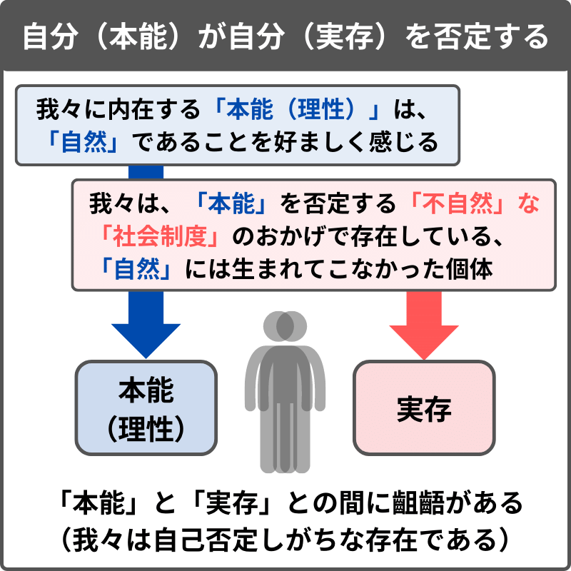
我々は本能として「自然」を好ましく感じるが、当の我々は「不自然」に頼って生まれてきた。
いまだその大部分が「自然」なままの本能と、「集団性」の力によって「不自然」に生まれてきた自分という存在との間には齟齬があり、それが、我々を自己否定しがちな存在にしている。
近代的個人として思考するようになった人間が厭世観を強めるのはよくあることだが、それは、自己意識と社会が乖離しているのみならず、自己意識と実存が乖離しているからでもあるかもしれない。
個人が個人として集団の価値観から開放されることが善しとされがちな今の社会においても、自分の欠点を意識せずにいられる人は少なく、多くの人が自己否定をしがちである。もちろんそれは、コンプレックスを煽るビジネスの影響も多分にあるだろう。ただ、我々はその成り立ちからして、自分（本能）で自分（実存）を否定してしまいやすい存在でもあるのだ。
この、本能と実存が乖離するゆえに自己否定しがちという特徴が、ある種サピエンスの原動力であり、人間のかけがえなさであると言うこともできるかもしれない。しかし、それゆえに問題は複雑で、我々は、ただ単に「正しさ」を追求すればいいというわけにはいかない。
「正しさ」を重視し、「現存する個人の多様性」を尊重することは、それはそれで、「長期的な集団の多様性」を否定することになる。
結婚や出産に疑問を持つ個人の自由を肯定した場合、「現存する個人の多様性」は尊重されたことになるかもしれないが、長期的には、サピエンスという 種の多様性が失われてしまう。逆に、社会の圧力によって気の進まないまま子供を産み育てなければならない場合、その個人からすれば悲劇かもしれないが、そ の共同体や、サピエンスという種全体にとっての「長期的な集団の多様性」には寄与することになる。
つまり、第1章から繰り返し述べてきたように、「集団性（豊かさ）」と「個人性（正しさ）」は相反し、そしてそれは、根が深い問題なのだ。
- 人は、誰かに恋愛感情を抱いたり、子孫を残したいと思う本能を持っている。だが、「結婚」などの「社会制度（集団性）」は、「自 然」な本能を超えて、「不自然」に集団に貢献することを個人に強いるものだった。そのため、各々が自由に自身の幸福を目指す「個人性」が優位の社会になれ ば、「結婚」のような制度を受け入れる人間は減っていく。
- 一般的に「理性」と「本能」が対立すると思われやすい。しかし本論の枠組みでは、「理性」と「本能」は、「社会制度（集団性）」と対立する点において、どちらも「個人性」の側になる。本論では、「理性が本能を再評価している」と考える。
- 「結婚」などの集団のための「社会制度」は、個人の「理性（本能）」からは「正しくない」ものに映る。しかし、今の社会の「豊かさ」や、現存する我々自身の存在が、そのような「正しくない」もののおかげで成り立っているという事情がある。
- 我々の本能は「個人性（正しさ）」を志向するが、それと相反する「集団性（豊かさ）」によって我々の実存が成立している。そのため、我々は、自身に本能として内在する「正しさ」を自身に適用すると、齟齬が生じて、自己否定に陥ってしまいやすい。
- 現代では、「正しさ」のキーワードとして「多様性」が掲げられることが多い。「伝統的な価値観（集団性）」が強制してきた「画一 性」に対して、個人の形質（本能）にはもっと「多様性」があるからだ。ゆえに、「近代的な価値観（個人性）」が優位になった社会では「多様性」が重視され る。
- しかし、「現存する個人の多様性（正しさ）」を重視する社会は、生まれる子供の数が減っていき、「長期的な集団の多様性（豊かさ）」を失っていることになる。
2.8 競争は「人工的に自然を再現しようとする試み」である
「集団性（豊かさ）」と「個人性（正しさ）」が相反する理由は、我々サピエンスが、「本能（個人性）」に反する「社会制度（集団性）」によって、ここまで繁栄してきたからだ。
そして、近代に入り、特定の（ローカルな）「社会制度」が相対化され、個人として思考する人が増えると、「理性」による「本能」の再評価が行われる。（なぜ近代になって「個人性」が有利になり始めたのかについては、第3章で詳しく説明するつもりだ。）
ひとまずこの時点では、かつては「個人性」が優位な「自然」な状態があり、そこからサピエンスが「集団性」によって飛躍的に発展し、再び「個人性」が優位な「理性（本能）」を重視する社会がやってきた、という図式を踏まえてもらいたい。
- 「個人性」優位：サピエンスも、他の自然生物と同様に、「本能（遺伝子の内部）」に規定されていた
- 「集団性」優位：「社会制度（遺伝子の外部）」の影響を受けやすくなることで、飛躍的に発展した
- 「個人性」優位：「理性」が「社会制度」を疑い、再び「本能」が評価されるようになった
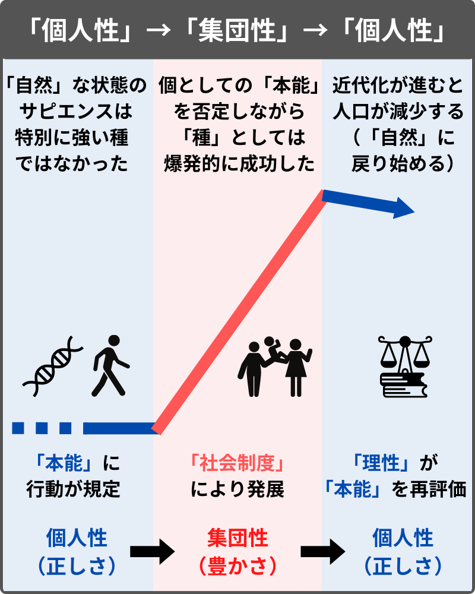
第1章（1.6）では、個人の主観（ミクロ）での「能力の向上」が、社会全体（マクロ）では「リソースの空費」になるという「倒錯（勘違い）」を指摘した。
この第2章の内容と接続して言うなら、我々サピエンスは、本能的（ミクロ）に「強い」と感じるものが、集団（マクロ）では「弱く」、また、本能的（ミクロ）に「弱い」と感じるものが、集団（マクロ）では「強い」、という倒錯をしてしまうのだ。
- 集団性（豊かさ）：本能的に「弱い」と感じるが実は「強い」
- 個人性（正しさ）：本能的に「強い」と感じるが実は「弱い」
サピエンスにおいては、集団（マクロ）の強さが、実質的な強さだ。
サピエンスが「集団性」によって自然生物を引き離した後は、サピエンス同士の争いになる。そこでは、より集団を強くする「社会制度」を機能させた集 団が生き残ってきた。集団の存続を有利にしやすいのは、おそらく、大きな集団（大規模かつ長期的な協力関係）を成り立たせるような「社会制度」だろう。 個々のサピエンスの強さにはそれほど大きな差がなく、基本的には「集団の大きさ」が「強さ」になるからだ。実際に、過去から現在にかけて、社会集団の規模 は大きくなり続けている。
大きな集団を成り立たせるような「社会制度」は、サピエンス個人の主観からすれば、「弱いもの・間違っているもの」に映るかもしれない。だが、集団の単位で長期的に見れば、そうやって個人が本能的（理性的）に「弱い」と感じるものほど、実は「強い」。
サピエンスは、その「本能」の大部分がまだ「自然」なままなので、本能的には、自然環境で生き残りやすい「優秀な個体」を好ましく思う。一方で、そのような「自然環境を生き抜ける優秀な個体」を、「不自然に協力し合う集団の力」によって蹂躙してきたのがサピエンスなのだ。
自然淘汰の基準では不適格な個体を助けることや、突出した個体を集団のために抑えつけることなどは、自然生物ではありえないほど「不自然」に集団を維持することができるサピエンスにとっては、それが集団を強くする要因になりうる。
なぜ伝統的な社会において、生まれで職業が決まったり、長男が優遇されたりなど、現代的な視点からは合理性が疑問視されるような秩序が続いてきたの かというと、結果としてそのような集団のほうが生き残りやすかったからだ。長期的な存続を懸けた争いにおいて、集団が同じ目的を持って協力し合えることに 比べれば、優秀な個人が評価されるかどうかは、それほど重要な問題ではなかったのだろう。
そして、ここまで説明してきたように、我々の主観において「強さ」と「弱さ」が食い違うからこそ、「正しいから豊かになる」という倒錯が発生する。この倒錯は、我々が「理性」を働かせて「本能」を重視するからこそ起こるものなのだ。
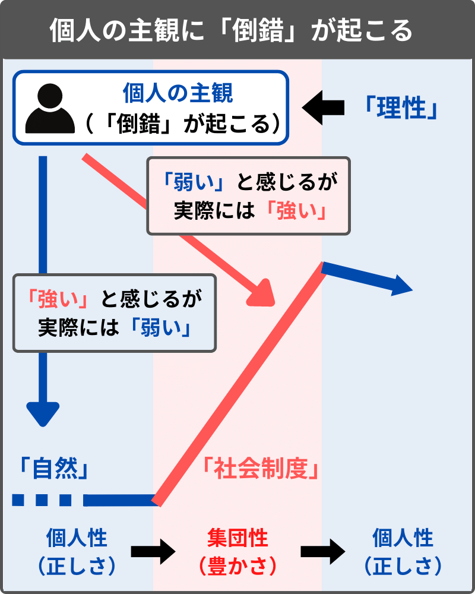
「自然（優秀な個体が生き残る環境）」における個体に強さを見出してしまう倒錯は、「理性」によって「本能」を再評価する近代思想によく見られるものでもある。例えば、強者を引きずり下ろそうとする集団を「畜群」と言って批判したニーチェが典型的だ。しかし、ニーチェが唾棄したような、優れた個人を認めようとしない集団は、そうであるがゆえに実際には「強い」のだ。
よく、「人間は平等である」という考えが空疎な理想論と見なされ、「人間には能力差がある」という考えがリアリティのあるものと見なされる風潮があ る。しかしこれは、サピエンスにとっては実は逆で、人間は物質的な条件（実際の強さ）においてほとんど平等なのだ。どんな人間でも鈍器で殴られれば死ぬ し、老いれば能力が失われ、ひとりでは生殖して子孫を残せず、個人で集団を相手にして勝つことはできない。
そもそも、「人間の能力差」自体が、それを可視化する装置が整備されることによって初めて現れるものだ。競争を 行えるだけの余裕のある社会であり、能力差を可視化する仕組みが用意されなければ、多くの場合、その能力が個人に帰属するという観念すら生まれない。例え ば、類稀なサッカーの才能を持つ人がいたとしても、サッカーという競技が存在し、それに打ち込める余裕のある社会でなければ、その能力が発揮されること も、認識されることもない。
スポーツ、学力テスト、市場競争のような「相対的な競争」は、社会がルールを整備することで実現し、それはある意味で、「人工的に自然を再現しようとする試み」であると見なすことができる。
我々に内在する「自然な本能」と「それを再評価する理性」は、自然環境で生き残りやすいような優秀な個体に、「強さ」「美しさ」 「憧れ」「正しさ」を見出しやすい。スポーツなどの「相対的な競争」の勝者は、ある種の「強く美しい自然」を体現しているものと言える。そして、それゆえ に実は弱く、競争によって無害化された状態なのだ。
第1章で述べたように、「相対的な競争」は「ブレーキ」であり、加害的なリソースを安全に空費させる「正しいが、豊かにならない」ものだ。
「相対的な競争」の勝者は、「本能的（理性的）に好ましく思われやすい優秀な個体であること」と「無垢な自然環境のように無害であること」という二重の意味において「正しい」。そして、そのような「正しさ」は、「豊かさ」と相反するゆえに、生活を過酷なものにしていく。
我々が生きる今の社会には、他者より秀でることができなければ不利になってしまう「相対的な競争（ビジネスやメリトクラシー）」が、至るところに張 り巡らされている。知らなければ損をする情報、合理的に判断しなければ騙される契約、わざと理解しにくくされた複雑な制度など、現代は、意図的に作られた ような困難に溢れていて、弱者救済のための社会福祉でさえ、制度を理解して主体的に使おうとしなければ受給することができない。（社会福祉の問題について は第3章で解説。）
このような、現代人が直面している困難は、優秀な個体でなければ生き残れない「自然」が、人工的に再現されようとしているものと見なすことができ る。それは、サピエンスが「集団性」を機能させた以前の「自然」な状態に戻ろうとするようなものであり、この動きが進むほど社会が衰退していく。
にもかかわらず、「相対的な競争」がこれほどまでに影響力を持っているのは、それが我々に内在する「本能的な好ましさ」に訴えかけるものだからだ。我々は、本能的（理性的）に、優秀ではない個体が不利になる「自然」な状態を「正しい」と思いやすく、「不自然」によって成立している今の社会の「豊かさ」を間違ったものと思いやすいのだ。
2.9 競争は「可視化している」に過ぎない
本章ではここまで、「相対的な競争（個人性）」は、それによって「強くなっている（アクセルが踏まれている）」と感じる個人の主観に反して、実は 「ブレーキ」なのだが、個人（ミクロ）と集団（マクロ）が食い違う「倒錯」が機能しているがゆえにそれが認識されにくい、と主張してきた。
しかしまだ、「学力テスト」のような競争が「ブレーキ」として機能することに、納得できない人は多いかもしれない。各々が懸命に勉学に励むことが「生産能力の向上（豊かさ）」に寄与するという素朴な実感は、なかなか否定しがたいだろう。
以降では、学力競争や学歴社会について解説していく。
まず前提として述べたいのは、学校教育は、「相対的な競争」の要素だけで構成されているものではないことだ。第1章（1.10）で、現実的な仕事 は、「人のためになる仕事をするべきという社会の規範（豊かさ）」と、「金を稼がなければ生活できないという市場のルール（正しさ）」のバランスを取りな がら行われていると述べたが、同じことが「教育」に関しても言える。
「教育」も、「集団性（豊かさ）」と「個人性（正しさ）」のバランスを取りながら行われている。
「教育」における「集団性」に当たるのは、例えば、授業内容や教材を良いものにしようとする教育関係者の「規範」や「気持ち」であり、「個人性」に当たるのは、学力テストの点数を競って成績に見合ったランクの学校に振り分けられる「ルール」や「メリトクラシー」になる。
注意したいのは、学力テストのような「相対的な競争」の形式のものであっても、その内容には「豊かさ」が入り込む余地があることだ。ただ相対的な差 を作ることのみが目的であれば、無味乾燥な暗記テストや計算テストであってもその役割は果たせる。一方で、例えば日本の大学の入学試験は、点数を取るため の学習を通して本質的な理解に迫りやすいような試験内容であることが意図されている場合が多い。このような意図は、「物事を良くしようとする規範（絶対的 な生産）」として機能しうる。
当然だが、学校教育のすべてが「相対的な競争」であるわけではない。日本の教育現場にいる関係者の多くは、「ルール」や「メリトクラシー」に縛られ るなかで、教育の内容を良いものにしたいという「規範」や「気持ち」を持って仕事に臨んでいるだろう。また、「市場のルール」には評価されにくいゆえに 「集団性（豊かさ）」が必要な「初等教育」も、おそらく日本の現場では、一定のモラルの高さによってそれが維持されている。
しかし、日本の「教育」において、「相対的な競争」の度合いは過去よりも強まり続けていて、現在は「個人性（正しさ）」が過剰であると言えるだろう。
第1章（1.8）で、「GDP」という「生産」の指標の問題を指摘したが、本章では、「学力テスト」によって可視化される「学力」にも、「GDP」の問題と共通する部分があることを指摘したい。
第1章で述べたが、GDPという指標によって「交易」が「生産」として可視化される以前から、人は生産活動を行ってきた。同じように、学力テストや偏差値などによって「個人の学力」が可視化される以前から、人は、何かを学んだり、自身の興味関心を追求してきた。
学校機関に評価されるものだけを「学び」と捉えるのは、市場で取り引きされるものだけを「生産」と捉えるのと同じような錯誤と言える。
「仕事」において、「人のためになる仕事ほど、市場に評価されて金が儲かる」が倒錯であることを第1章（1.10）で説明したが、「教育」においても、「豊かさ」と「正しさ」が素朴に同一視され、「学力テストで良い成績をとる人間を育てれば、彼らが社会を良くしてくれる」というような倒錯が発生しがちだ。
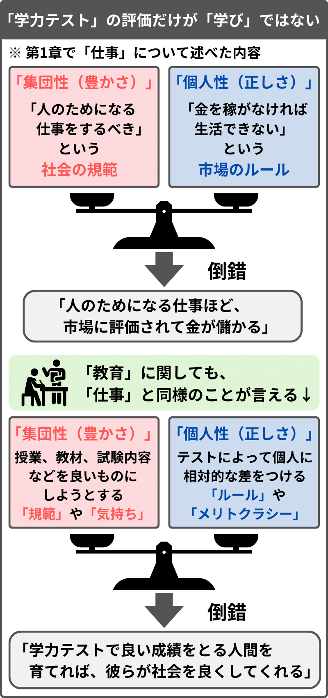
「相対的な競争」は、その能力そのものを生み出しているのではなく、能力を可視化しようとする試みにすぎない。そして、可視化することにリソースが消費されてしまうがゆえに、それが「ブレーキ」になる。
例えば、何らかの能力を測るテストを、100万人に対して行うとする。それを行うことで、あくまでそのテストの基準においての話になるが、「100万人中100位以内の天才」や「100万人中1万位以内の秀才」などが可視化されることになる。
ただ、そのテストによって可視化された「天才」や「秀才」たちは、テストが行われようとそうでなかろうと、この世界には存在している。テストはあくまで、「その能力を作り出している」のではなく「差を可視化している」のだ。
「差が可視化されるテストが行われるからこそ、各々が懸命に努力する」という側面もなくはない。だが、第1章（1.6）で説明したように、個人（ミ クロ）の努力が、集団（マクロ）ではリソースの空費になるという「倒錯」がある。実際に、「差が可視化されるテストがあるからこそ、そのためにリソースを 割かなければならない」という状況は、「豊かさ」にとってマイナスに働きやすいだろう。
差を可視化するテスト（偏差値や大学ランクなど）が影響力を持っていない社会であれば、テストで高得点を出せるような「天才」や「秀才」といった人も、「集団のための仕事」に自身のリソースを注ぎ込んだかもしれない。
一方で、差を可視化するテストが影響力を持った社会においては、そのテストのための勉強をしなければ、自身が不利になってしまう。ゆえに、「集団の ための仕事」に使われたかもしれないリソースが、「自分が競争に勝つための努力」に使われやすくなる。そして、第1章（1.3）で述べたスポーツの例と同 様、テストで高い点をとるための努力が物質的な豊かさを生産するわけではないので、必死にテスト勉強をする人が増えるほど、むしろ社会は貧しくなってい く。
さらに、「競争」が過剰な社会になると、長期的には、「競争」に参加できる主体そのものが減少していく。今の日本で起こっているように、学力テスト のような「相対的な競争」に勝たなければ不利になる社会では、「まともな子育て（競争に有利になるための最低限の環境を子供に与えること）」のハードルが 上がり、それが少子化に繋がっている。
このように、学力テストのための努力は、それに取り組んでいる個人（ミクロ）の実感としては「アクセル」に思えるかもしれないが、集団（マクロ）では「ブレーキ」として働くのだ。
ただ、ここでは、学力テストのような競争をすべて否定するわけではなく、「程度問題」であると考える。
ここまで述べてきたように、学力テストのような「差を可視化する装置（相対的な競争）」の影響力が強すぎると、社会は貧しくなっていく。一方で、 「差を可視化する装置」がまったく機能していない場合は、個人の努力や能力が認められず、社会に不満を持つ人が増える危険な状態だろう。
1か0かで善し悪しを考えるのではなく、競争が必要な面を認めつつも、それが過剰かどうかを考える必要があるのだ。
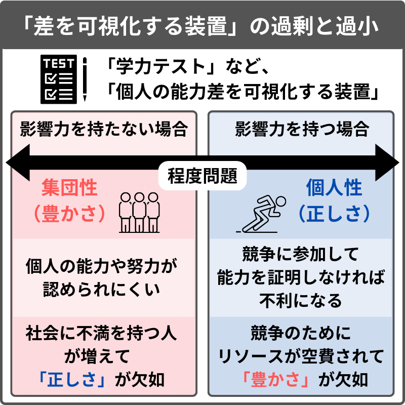
先に述べたように、「競争（人工的な自然）」はサピエンスの「本能」に訴えかけるものであり、「社会制度」による抑圧がない状態であれば、サピエンスは本能的（理性的）に競争を好ましく思う。つまり、競争には自然発生的な側面があり、「相対的な競争」が起こらない社会は、サピエンスの本能を否定する「社会制度」が強く機能していることを意味する。
このような事情を、本論では、「集団性（豊かになるが、正しくない）」と「個人性（正しいが、豊かにならない）」が相反するという形で説明しているのだ。
ただ、ここまで述べた上で、新しく指摘したいのは、「競争（個人性）」が、その結果として、「社会制度（集団性）」を作り出す場合があることだ。
例えば、学力テストを行った結果、「学歴」という差別的な身分のようなものができれば、それは「集団性（豊かさ）」として機能することになる。この点について、以降で説明していく。
2.10 学歴社会は「差別的」だからこそ「豊かさ」を生む
「学力テスト」の結果として「学歴」が生じる場合、それは、「個人性」の作用から「集団性」が発生することを意味する。
これについて説明するため、まず、「学歴社会」という抽象的なモデルケースを想定したい。学歴やキャリアといったものには多様な論点が絡むので、話を単純化したモデルによって考える。
この「学歴社会」においては、一定の年齢（例えば18〜24歳あたり）までは、誰しもに公平に「学力競争」の機会が与えられるとする。そして、その競争の結果として決まる「学歴」によって、生涯の待遇が大きく決定づけられるとする。
そのような社会では、まず、全員に競争の参加が認められ、それが「公平な競争」になるように、生まれや環境による不公平を埋める努力がなされる必要がある。
そして、その競争の結果として、各々の生涯の待遇が決まる。例えば、「競争の上位者には、大きな計画のリーダーや、最先端の研究開発の仕事」「競争 の中位者には、中間管理や、特定の技術を扱う仕事」「競争の下位者には、現場で対応する仕事や、単純作業」など、基本的には「学歴」という身分が固定され たまま、「不公平な協力」によって仕事が行われることになる。
もちろん、生まれや環境の差がまったくないような「完全に公平な競争」や、すでに決まった格差が絶対に覆されないような「完全に不公平な協力」などはありえない。
ただ、この「学歴社会」というモデルにおいては、「公平な競争」の結果として「不公平な協力」が発生する、と単純化して考える。
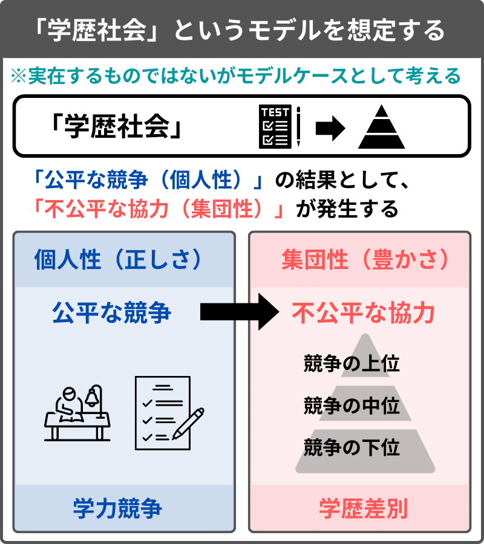
この「学歴社会」のモデルにおいて、誰しもが一定の年齢までは「公平な競争」に参加できることが、「個人性（正しさ）」として機能する。そして、競 争の結果として生じた学歴が不可逆な身分となることで、過剰な競争が制限され、学歴差別に従わざるをえない「不公平な協力」が、「集団性（豊かさ）」とし て機能する。
ここで例として出した「学歴社会」が、望ましいものであると主張するわけではないし、実現可能なものであるとも考えない。ただ、ここで主張したいのは、この「学歴社会」は、「個人性（個人に納得を与える作用）」と「集団性（集団のための仕事を強制する作用）」の両方が、原理的にはうまく機能しうるということだ。
これは後に行う「資本主義」の説明にも同じことが言えるのだが、「競争の結果として生じる差別や格差」は、「集団性（アクセル）」と「個人性（ブレーキ）」の両方が機能するバランスのとれた仕組みであり、それゆえに、過去の社会において実際に採用されてきたものでもある。
ここで例示した「学歴社会」は、現実に存在しない架空のモデルだが、これに近い形で社会の秩序が成り立っていた時期が、日本や欧米などにおいて、一時期はあったかもしれない。
「学歴社会」のモデルと比較してみることで、過去の社会や、今の社会の特徴がわかりやすくなる。
例えば、「学歴社会」を、「集団性」と「個人性」の釣り合いがとれている「中間」だと仮定して、それと「伝統的な社会」とを比較したとき、生まれによって身分が決まってしまう「伝統的な社会」は、「個人性（正しさ）」が欠如していると言える。
一方で、「学歴社会」と「現代社会」とを比較したとき、学歴や職場が決まってからも絶えず競争に晒される「現代社会」は、「集団性（豊かさ）」が欠如していると言える。
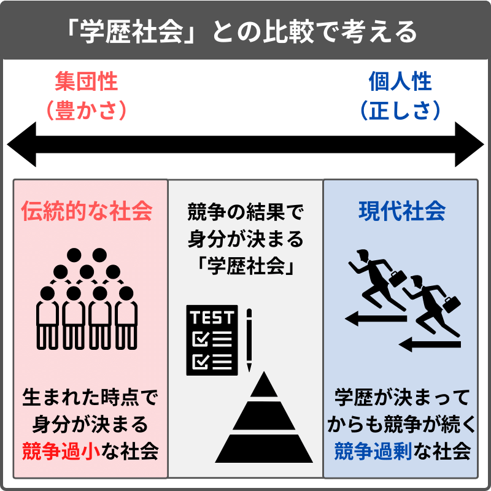
このように考えると、今の社会は、「公平な競争（個人性）」が過剰で、「不公平な協力（集団性）」が欠如していることになる。
ここで主張したかったのは、「差別（不公平な協力）」が否定されることは「正しい」ことなのだが、それゆえに「豊かさ」を追求することができなくなっていることだ。
「集団の欲望」と「個人の欲望」が相反する以上、社会に必要な仕事を促すには、個人に我慢させる部分がどうしても必要になる。そこにおいて、エリー ト（競争の上位者）をトップに据えるような、差別的な秩序のもとで協力する流動性の低い社会のほうが、実は「豊かさ」が生産されやすくなる。
一方で現代は、社会人になってからも、ビジネススキルの向上や転職などによって、相対的な立ち位置を上昇させようとする個々の努力が続く。これは、 どの年齢からでも「相対的な競争」に参加して自分の可能性を追求できるという点では「正しい」社会だが、そうやって個人の優劣を競い合うからこそ、「豊か さ」が生産されにくい。
また別の例を出すなら、今は、学術機関（大学機関）においても、「不公平な協力（集団性）」が否定され、「公平な競争（個人性）」が重視されるようになっている。つまり、大学は、学力競争で選別された者が「集団のため」の研究開発を行える場所ではなくなっている。
「豊かさ」のためには、採算をあまり気にせずに多くのリソースを投入することが必要だが、今の研究者は「個人の能力差を可視化する競争」に参加する ことを強いられる。具体的には、「論文の引用数の国際ランキングを意識しろ」や「大学も金を稼げるようになれ」といった形の、客観的な業績が重視される風 潮だ。これは、一度ポジションを得た人間がそこに居座り続ける不公平を排除する点では「正しい」が、それゆえに「豊かさ」のための研究開発を行う余裕がな くなる。（学術や大学の問題については第3章で詳しく述べる。）
このように、努力をするほど個人が良い立場を得られる「公平な競争」が「正しさ」として機能し、その結果として生じる学歴などの「不公平な協力」が「豊かさ」として機能するのだ。
- 個人性（正しさ）：公平な競争 ：競争に勝つための個人の努力
- 集団性（豊かさ）：不公平な協力：競争の結果として生じる差別
「学力競争によって生産が促進される」は、結果として間違いではない。しかし、その生産にとってパフォーマティブな部分は、個人が学力テストのための努力する「公平な競争」ではなく、競争の結果として「不公平な協力」が生じることにある。
しかし今は、学歴が決まれば競争がそこで終わるわけではない。現代社会は、学歴をめぐる競争が終わってからも、またすぐ次の競争に駆り立てられる社会なのだが、それゆえに「個人性（正しさ）」が過剰と言える。
もっとも本論は、ここで例示した「学歴差別」のモデルような社会の復活を意図しているわけではない。第1章（1.10）では、「正しさ」の過剰に対 して「伝統的な規範を再び盛り上げる」という形の「豊かさ」の再起を否定しているが、同じように、学歴差別のようなものを復活させられるとも考えない。
実際に、「学歴差別の復活」は、「男尊女卑の復活」と同程度には非現実的なものだろう。詳しくは第4章と第6章で述べるが、本論の意図は、「BI」という「それほど差別的ではない」方法によって、十分な「豊かさ」を確保していこうというものだ。
ここまで「学歴」について述べてきたが、それは、「競争によって生まれる優秀な個人が社会を豊かにしてくれる」という倒錯を否定するためだった。
先に述べたように、競争は可視化しているにすぎない。競争がなくとも、競争によって順位が可視化される前の人間そのものは変わらずこの世界に存在し ている。そして、順位を可視化しようとする競争が影響力を持つことで、そのために各々がリソースを使わなければならなくなり、「集団のための仕事（豊か さ）」が軽視されてしまう。
ただ、この倒錯がややこしいのは、「メリトクラシー」自体は「個人性」として機能するものでも、「メリトクラシー信仰から生まれる差別や優遇」は「集団性」になりうることだ。
「人のためになる仕事ほど、市場に評価されて金が儲かる」や「学力テストで良い成績をとる人間を育てれば、彼らが社会を良くしてくれる」は倒錯だ。 ただ、そのような倒錯をベースにしたものであっても、「人のためになる仕事をするべき」と考えたり、「優秀な人をサポートしよう」とする人が増えるなら、 それは「集団性」として機能する場合がある。
その意味で、「倒錯」もまた「集団性」として機能しうるかもしれないが、このような構造に意識的になった（情報化が進んで無知が許されなくなった）上でなお、いかにして「集団性」を再構築していくかが本論のテーマのひとつであり、それについては後の章で論じていく。
- サピエンスの「本能」の大部分はいまだに「自然」なので、自然環境で生き残るような「優秀な個体」に強さや美しさを感じやすい。 スポーツや学力テストや市場競争などの「相対的な競争」は、ルールを整備することで、「優秀な個体が生き残る自然」を人工的に再現しようとする試みと言え る。
- 競争（人工的に再現された自然）の勝者は、かつてサピエンスがその「不自然」な「社会制度（集団性）」によって蹂躙した「自然」に類するものであり、個人の主観（本能・理性）に反して、むしろ弱い。このような倒錯ゆえに、競争が「ブレーキ」として機能する。
- 競争は、優秀な人間を「作り出している」のではなく「可視化している」にすぎない。「差を可視化する装置」があろうとなかろう と、人間のリソースの総量は変わらない。そして、競争が影響力を持ちすぎた社会では、各々が自分の能力を証明するために多くのリソースを使わざるをえず、 それは「絶対的な生産（豊かさ）」にとって「ブレーキ」になる。
- 「競争の結果として生じる差別（学歴差別など）」は、過去にパフォーマンスを発揮してきた仕組みだが、そこにおいて、個人が努力 する「公平な競争」ではなく、競争の結果として身分制度のような秩序が生じる「不公平な協力」が、「豊かさ」にとっての「アクセル」として機能する。
- スキルアップや個人の成果が求められがちな現代は、「公平な競争」の結果として「不公平な協力」が生まれることも許されず、常に「公平な競争」が続く競争過剰な社会になっている。それは「正しい」ことではあるが、ゆえに「豊かさ」が欠如している。
2.11 格差が生まれるからこそ「資本主義」が「アクセル」になる
競争は「個人性（正しさ）」だが、その結果として生じる格差が「集団性（豊かさ）」になることの例として、先に「学歴社会」について述べてきた。
ここからは、「市場（資本主義）」も同じように、「公平な競争（個人性）」と「不公平な協力（集団性）」を併せ持つことを説明する。
第1章（1.4）で述べたように、「市場のルール」は「相対的な競争（個人性）」を社会にもたらす。
それに対して、ここで指摘したいのは、「市場のルール」における競争の結果、「資本蓄積」という「不公平な協力（集団性）」が発生することだ。
本論では、「学歴社会」や「資本主義」を、「集団性」と「個人性」の両方が備わったものとして見ている。
また、「資本主義」の場合は、学力テストのような競争と比べても、競争の結果としての「集団性」が特に発生しやすい。なぜなら、市場競争はスタート地点が不公平になりやすく、「公平な競争」としては欠陥が多いからだ。
スポーツにしても学力テストにしても、「完全に公平な競争」はありえない。競争をする主体そのものが家族や地域共同体といった「不公平な協力（集団 性）」に頼って生まれてくるものである以上、家庭環境や地域間格差などの条件を完全に均すことは不可能だ。ただ、それでも競技に関しては、少なくとも、毎 回のゲーム（試験）ごとには公平なスタート地点が設定されるし、その点においてルール上の公平さは担保されやすい。
一方で、市場競争は、スポーツや学力テストのように公平なスタート地点が毎回設定されるわけではない。「富める者はますます富み、貧しき者はますま す貧しくなる」と言われるように、仮に最初の条件が公平だったとしても、競争の勝者（金を稼いだ者）は次の競争でより有利になりやすく、敗者（金を稼げな かった者）は不利になりやすい。それが積み重なっていけば、覆すことのできない格差が生まれる。
しかし、そうやって、資本主義において生じる格差（資本蓄積）こそが、「生産」の「アクセル」になるのだ。
「資本蓄積」によって力を得た企業は、何らかの集団の目的に人を従事させること（不公平な協力）がしやすくなり、それは「集団性（豊かさ）」として機能しうる。
実際に、市場における「豊かさ」の多くを担っているのは、市場競争における「勝ち（資本）」を積み上げた大企業だ。
極端な例として、ビックテックと呼ばれるような巨大グローバル企業は、もはや市場において「公平な競争」を行っているわけではない。むしろ、政治的 な影響力を持ってルールに介入し、収奪的な形で事業を展開している。しかし同時に、今の時代の「豊かさ」の最先端をリードしているのも、そのような巨大グ ローバル企業だろう。
かつては、国家が、「戦争に勝つ」という目的において、個人を集団（国家）のために従事させてきたが、現在は、巨大企業が、「資本を増やす（市場競争に勝つ）」という目的において、個人を集団（企業）のために従事させている。
いずれにしても、「豊かさ」の生産は、個人が相対的優位を得るために競争することではなく、集団（国家や企業）の目的に個人が従事することで行われ る。そして、国家が富国強兵のための「集団性」を機能させにくくなった現代においては、集団のために個人を従わせる力が、「国家権力」ではなく「資本蓄 積」によって発生しやすくなっている。
「資本主義」は、その前提は「自由競争」という「個人性」なのだが、競争の結果として、「資本蓄積」という「集団性」が発生するのだ。
本論では、「市場（資本主義）」を、「自由競争（個人性）」と「資本蓄積（集団性）」が組み合わさったものと考える。
- 個人性（正しさ）：公平な競争 ：市場における「自由競争」
- 集団性（豊かさ）：不公平な協力：結果としての「資本蓄積」
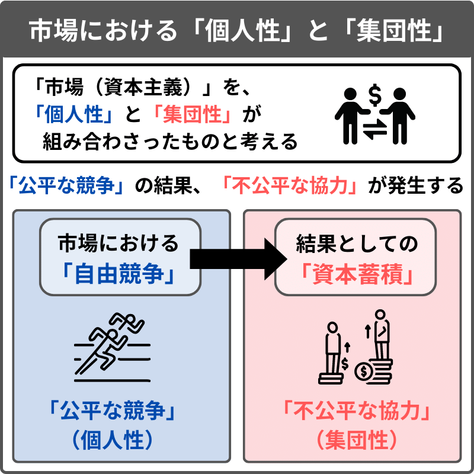
基本的に、市場において、「自由競争」と「資本蓄積」を切り離すことはできない。「自由競争の結果（個人の所有権）」を認めるならば、「資本蓄積」 も認めざるをえないからだ。もちろんこれは「国家が資産に対してどれだけ税を課すか」という程度問題でもあるのだが、少なくとも私有財産が認められる「資 本主義」の体制においては、必然的に「資本蓄積」が発生する。
現在も、「資本主義」というシステムに対しては、喧々諤々の議論や批判がなされている。
ここで指摘したいのは、「資本主義」を肯定するにしても否定するにしても、「自由競争（個人性）」と「資本蓄積（集団性）」のどちら側を見るかによって、その内容がまったく反対のものになってしまうことだ。
例えば、「資本主義」における「個人性」の部分の肯定と否定、「集団性」の部分の肯定と否定とで、以下の4通りのパターンを考えることができる。
- 「個人性」を肯定：市場競争に参加する個人の自由が尊重される
- 「個人性」を否定：競争のための努力によって生活が苦しくなっていく
- 「集団性」を肯定：大企業の経済活動により豊かさが生み出されている
- 「集団性」を否定：資本による不公平な搾取が行われている
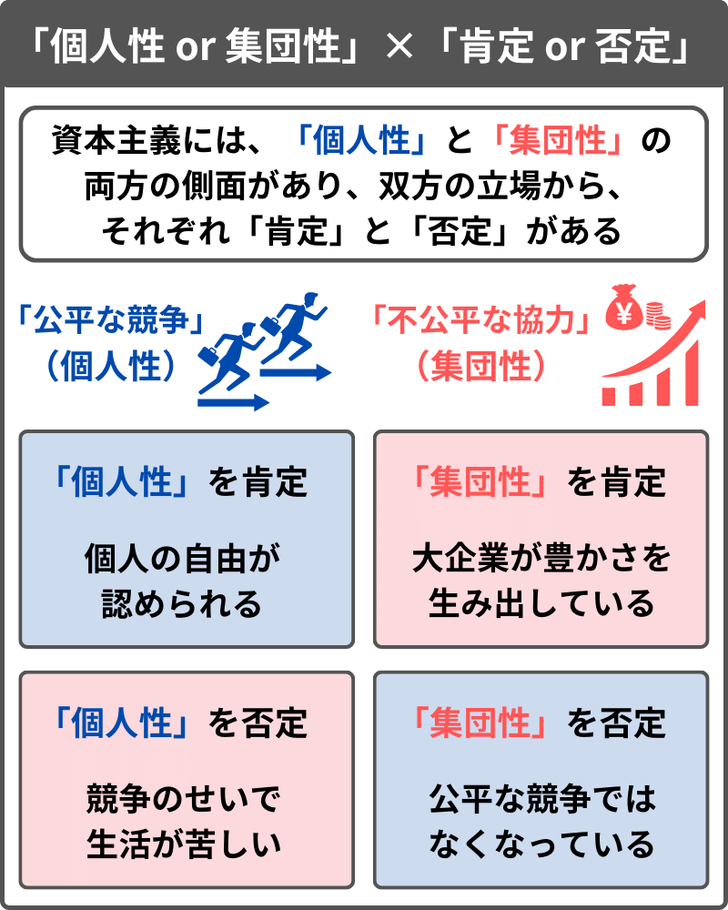
このように、資本主義が「個人性」と「集団性」の両方を併せ持つものであるがゆえに、双方の側面に対して、それぞれ肯定と否定が起こるのだ。
ただ、資本主義に対する批判の多くは「倒錯」のもとに行われている。よくあるものとして、例えば、「格差があるから社会が貧しくなっている」が挙げられる。ここまで説明してきたように、実際には、むしろ格差こそが「豊かさ」の源泉だ。
格差は、「正しくない」という理由で批判されるべきものかもしれないが、「豊かにならないから」という理由で格差が問題視されるのは倒錯している。
「正しさ」を重視する「近代的な価値観」を身に着けた人は、資本主義を批判するとき、格差や不公平（正しくない部分）が問題であると主張しやすい。しかし、「生活が苦しい」というような問題は、むしろ「正しさ」の過剰によって起こる。実際に、もし仮に「不公平な協力」を行っている企業が解体されていき、より「公平な競争」が行われるような社会になったとして、そのような社会は豊かになるどころか、今よりもさらに貧しくなってしまうだろう。
ここで、資本主義が「個人性」と「集団性」の両方を併せ持つことを指摘してきたが、それでも差し引きでは、資本主義は、「個人性（正しさ）」として機能すると本論では考える。その理由については、第6章で詳しく解説する。
ひとまずこの第2章では、（差し引きでは「個人性」として作用するものの、）資本主義に「個人性」と「集団性」の両方が兼ね備わっていることを述べ た。この点において資本主義は、ある程度はバランスのとれたシステムであり、それが、現在もほとんどの国で資本主義が採用され続けている理由かもしれな い。
では、かつて資本主義と対立していた「共産主義（社会主義）」や、近年の発展途上国において採用されることの多い「開発独裁体制」についてどう考えるのか、それを以降で論じる。
2.12 資本主義、共産主義、開発独裁体制
ソ連のような「共産主義（社会主義）」国家が崩壊した理由として、「生産性を向上させるインセンティブがなかったから」「個人の勤労意欲が低かったから」などという説明をされることがあるが、それは、メリトクラシーに毒された物の見方と言えるだろう。
市場が機能していない社会を「怠けた人間が得をする」と見なす考え方には注意が必要である。市場での交易を前提に生産が行われる以前の共同体は、自 分たちの生産活動が自分たちの生活に直結する社会であり、日々の労働はより直接的に自分たちの生命を左右した。そのような状況で、集団の一部として生きる 人間が、楽をするために怠けるというのは、決して簡単なことではなかっただろう。ソ連にしても、周囲の圧力が非常に強く機能していた社会だった。市場競争 がなければ人間は怠けてしまうと考えるのは安直だ。
また、もし仮に怠ける人が多くて社会が貧しくなったとして、貧しいからという理由で社会が維持できなくなるわけではない。今も、他と比較して勤労意欲や経済力が低いと言えるような国が存在するかもしれないが、それが理由で体制が崩壊したりはしていない。
ではなぜ、過去の共産主義国家は体制を維持できなくなったのか？
本論で提示したモデルに沿った説明の仕方をするならば、共産主義は、「集団性（豊かさ）」が過剰で「個人性（正しさ）」が欠如した社会だった。
一般的に、共産主義国家は「豊かさ」が欠如したものと見なされがちだが、そのような見方こそが、「個人の欲望」を重視する「個人性（正しさ）」に寄った視点のものであると、本論では考える。
当時のソ連は、国が出生を奨励していたので同時期の先進国と比較して出生率が高く、また、宇宙開発や軍事開発においてアメリカと競い合い、近年のロ シアとは比べ物にならないほど国際社会においてプレゼンスがあった。つまり、「集団の欲望」を重視する視点においては、ソ連は「豊かさ」が欠如していたわ けではない。
ソ連は、市場に流通する商品という形を取らなかっただけで、「生産」においては「アクセル」が強く機能していた社会だったと言える。そして、問題は、「ブレーキ」が機能していなかったことにある。
ソ連は、国家権力によって個人の自由が強く制限されていた社会だった。ゆえに、自由を求める国民によって制度の変革を余儀なくされた。崩壊の原因は複合的なものだろうが、本論では、「アクセル（集団性）」が強すぎて「ブレーキ（個人性）」が足りなかったことが、共産主義が崩壊してしまった理由であると説明する。
なお、原理的には、市場を否定した場合でも、スポーツや学力テストのような「相対的な競争」によって「ブレーキ（個人性）」を代替することが可能だ。ソ連にしても、厳しい学力競争や出世競争が行われていたので、決して競争が存在しなかったわけではない。
あるいは、中国のような国は、個人の能力試験が尊重される文化が根付いているがゆえに、巨大な共産主義国家を維持できている側面があるかもしれな い。もっとも、中国共産党も実質的には市場を否定していないように、市場という「相対的な競争」なしに十分な「個人性」を機能させるのは難しい。
市場を否定する共産主義の問題は、国家が個人の自由を制限する「集団性」の過剰に対して、市場における個人の自由を認める「個人性」が欠如していた ことにあった。逆に、人口減少という形で社会が崩壊に向かっている今の先進国の問題は、「個人性」の過剰に対して、「集団性」が欠如していることなのだ。
現在もまだ、資本主義が批判されるとき、共産主義や、それを唱えたマルクスが持ち出されることが多い。ただ、近代思想が「理性（本能）」を重視しが ちであることを先に指摘したが、マルクスもその例にもれず、「個人性（正しさ）」の側を重視している論者であるように思う。マルクスは、基本的には、資本 主義における「自由競争（正しさ）」と「資本蓄積（豊かさ）」とで、後者における市場の公正でない部分を問題視していた。しかし、マルクスに端を発した共 産主義は、結果的には、市場における「資本蓄積」よりもずっと加害性の大きな「集団性」を機能させるものだった。
よく指摘されるように、共産主義や社会主義は、マルクスのテキストを踏まえているというよりは、誤読あるいは都合の良い解釈によって、「集団性」の ための御題目としてマルクスを唱えている。もっとも、このような事情は共産党に限ったものではない。例えば、自由民主党が「自由」や「民主」という概念を 特に重視しているわけではないし、21世紀になってもまだ宗教的連帯を基盤とする政党が影響力を持ち続けている。
なぜそうなるかというと、そもそも人が大きな集団を維持していること自体が、理屈に合わない「不自然」なものだからだ。そのため、「集団性」のために掲げるものに理屈が通っている必要はない。むしろ、論理的一貫性を重視したがゆえに集団を維持できなくなることは珍しくない。
すでに何度も述べてきたように、「集団性（豊かさ）」と「個人性（正しさ）」は相反し、「集団性」は、「豊かになるが、正しくない」という性質を持つのだ。
では次に、「開発独裁体制」と呼ばれるような、共産主義のように市場を否定するわけではないが、国家が独裁的な形で「集団性」を強く機能させる政治体制について述べる。
ハンス・ロスリングによる『FACTFULNESS』という書籍では、近年（2012年から2016年の間）に経済が急拡大した国のうち、10カ国 中9カ国が、民主主義のレベルがかなり低い国であり、民主的だから経済が発展するわけではないことが指摘されている（『FACTFULNESS』第8章を 参考）。
「開発独裁体制」は、経済において先進国にキャッチアップしようとする発展途上国に多く見られる政治体制だ。ここまで述べてきたように、「市場のルール」は、そのルールに沿って素直に努力すれば豊かになっていくというようなものではない。そのため、貧しい国ほど、まずは「アクセル（集団性）」を強く機能させる必要がある。それが、強権的な国家主導によって発展を目指す「開発独裁体制」なのだ。
ただ、この作用については第5、6章で詳しく述べるが、「開発独裁」によって経済成長すると、まさに経済成長するからこそ、「市場のルール」という「ブレーキ（個人性）」に接続される。市場を通してやり取りするようになることで、国民が「個人の自由」や「個人の権利」に触れることになり、民主化の機運が高まっていく。
「開発独裁体制」において、強権的な国家によって経済成長がリードされるが、その結果として国家の強権が許されなくなっていく。これはすなわち、 「集団性（豊かさ）」を機能させた国家が発展した先に、「個人性（正しさ）」を強制する「グローバル市場」の作用が待っていることになる。次の第3章で は、この「グローバル」がどのような性質を持つのかについて説明する。
なお、先に、共産主義が「集団性」過剰だったことについて述べたが、「集団性」が優位な社会は、前近代においてはむしろそれがスタンダードだった。自由を求める国民によってソ連が崩壊したのは、国家の外側の「グローバル」が影響力を持っていた時代だったという事情もある。
本章では、「学歴社会」や「資本主義」を、「集団性」と「個人性」の両方を兼ね備えるものとして説明してきた。ただ、詳細は次章以降で述べるが、基本的にそれらは、差し引きでは「個人性（正しさ）」として機能する。ある部分では国家を上回る力を持つグローバル巨大企業でさえ、ルールを自分たちに有利なように変えることはできても、「貨幣を支払ってもらうことで貨幣を得られる」という「市場のルール」自体を無視することは難しいからだ。
このような「市場のルール」に対抗して、「集団性（豊かさ）」を重視することができる可能性を持つのが「国家」だ。しかし、今は国家の方針を決める 「政治」の場においても、「個人性（正しさ）」が重視されるようになっている。第3章では、政治の場において「個人性（正しさ）」が過剰になる問題につい て扱う。
- 本論では、「資本主義」を、「自由競争（個人性）」と「資本蓄積（集団性）」が組み合わさったものと考える。
- 市場競争は、金を稼いだ者ほど有利になるので格差が開きやすく、「公平な競争（正しさ）」としては欠陥がある。だがそれゆえに、大規模な資本投資という「不公平な協力（豊かさ）」が発生しやすい。
- 「資本主義」が「個人性」と「集団性」の両方を兼ね備えるがゆえに、資本主義を肯定するにしても否定するにしても、「個人性」の部分と「集団性」の部分のどちらに着目するかで、その内容がまったく反対のものになってしまう。
- 「共産主義」は、「豊かさ」が過剰で「正しさ」が欠如した社会だった。そのため、国家の暴力や自由を抑えつけられた国民の不満をうまく制御できず、体制を維持することが難しくなった。
- 「市場のルール」は「ブレーキ（個人性）」として作用するので、これから途上国が発展しようとするときは、「開発独裁体制」と呼 ばれるような、国家主導による「アクセル（集団性）」を強めるやり方がセオリーになる。ただ、その結果として経済成長することで、「市場のルール」に組み 込まれることになり、「集団性」は減速する。
第2章のまとめ
第1章で、「集団性（豊かさ）」と「個人性（正しさ）」の相反という形式化を提示した。
この第2章では、両者が相反する理由として、我々サピエンスが、「遺伝子の外部」である「社会制度」によって、自らの「遺伝子の内部」である「本能」に反する形で繁栄してきた経緯について述べた。
- 集団性（豊かさ）：「遺伝子の外部」にある「不自然」な「社会制度」
- 個人性（正しさ）：「遺伝子の内部」にある「自然」な「本能」
「本能」も「社会制度」も、「生き残りやすかったから生き残ってきた」ものにすぎないが、そのスパンが大きく異なる。「本能」は、何億年という時間をかけて形成されてきたものだが、「社会制度」は、数万年で一気にサピエンスを今の地位まで押し上げた。
個人の「本能」に反するような「社会制度」でも、それが集団の存続に有利に働くならば生き残る。例えば、「結婚」という「社会制度」は、個人の「本能」を否定して出生を促してきたものだ。ゆえに、個人の自由が尊重される社会になるほど、婚姻率が下がり少子化が進む。
近代以降、合理的・内省的に思考するようになったサピエンスは、特定の「社会制度」を相対化して、「本能」のほうに「正しさ」を見出すようになっ た。しかし、「社会制度（集団性）」に頼って今の豊かな社会が成り立っている以上、「本能（個人性）」に立ち戻ることは社会の後退を意味する。
このような事情により、「集団性（豊かさ）」が「アクセル」で、「個人性（正しさ）」が「ブレーキ」として作用するのだ。
サピエンスは、「理性」によって「社会制度」を相対化すると、自らの「本能」に立ち戻ることになるのだが、そこで、「正しいから豊かになる（競争の勝者が社会を豊かにする）」という倒錯が生じる。
スポーツ、学力テスト、市場競争などの「相対的な競争（メリトクラシー）」は、我々が本能的（理性的）に「強さ」を感じやすい「自然（優秀な個体が 生き残る環境）」を、人工的に再現しようとするような試みと言える。ただ、そうやって再現された「自然」は、かつてサピエンスが「不自然」な「集団性」に よって蹂躙してきた「弱い」ものにすぎない。競争の勝者は、実際には無害化された個体だ。
このようにして、我々の本能的（理性的）な好ましさと反転して、「公平な競争」は「ブレーキ（個人性）」として機能し、「不公平な協力」が「アクセル（集団性）」として機能する。
例えば、学歴社会においては、学力競争において個人が努力する「公平な競争」の部分ではなく、競争の結果として身分的秩序が発生し、集団のための仕事が個人に強制される「不公平な協力」の部分が、「絶対的な生産（豊かさ）」を促す。
資本主義においても、「自由競争」が「公平な競争（個人性）」であり、その結果として生じる「資本蓄積」が「不公平な協力（集団性）」になる。
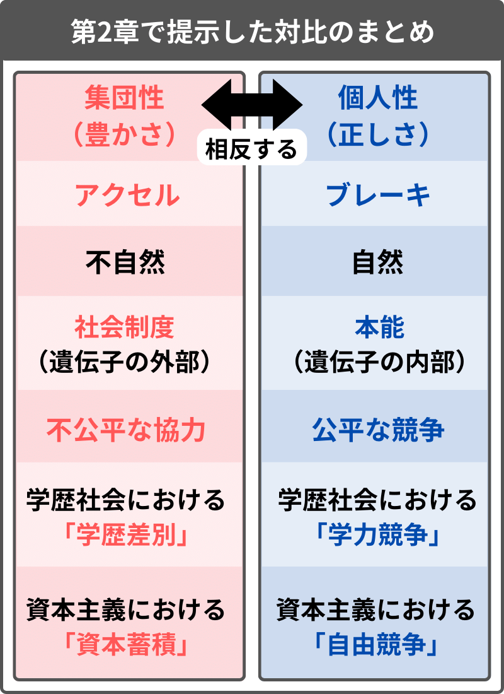
我々の本能（理性）がもたらす素朴な実感に反して、「公平な競争」は、「豊かさ」ではなく「正しさ」を強めるものであり、今の日本社会は「個人性（正しさ）」のほうが過剰になっている。
「個人性」の過剰に対して、「集団性」の重視に舵を切ることができる可能性を持つのが、「政治（国家の方針の変更）」なのだが、今は政治の場においても「公平であること（正しさ）」が重視される。この問題を、次の第3章で扱う。
- TOP
- 第0章 イントロダクション
- 第1章 なぜ社会に必要な仕事ほど評価されないのか
- 第2章 豊かさと正しさが相反する理由
- 第3章 政治的に正しくなるほど福祉が弱くなる
- 第4章 ベーシックインカムを可能にする考え方
- 第5章 貨幣を否定する生産共同体
- 第6章 積極財政と資本主義
- 第7章 ベーシックインカムが実現したあとの社会
- 第8章 要約とあとがき